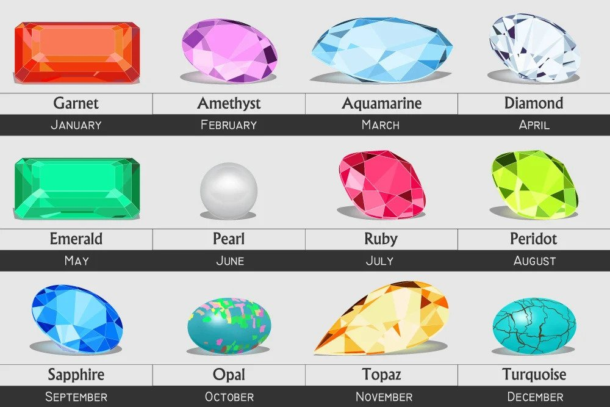
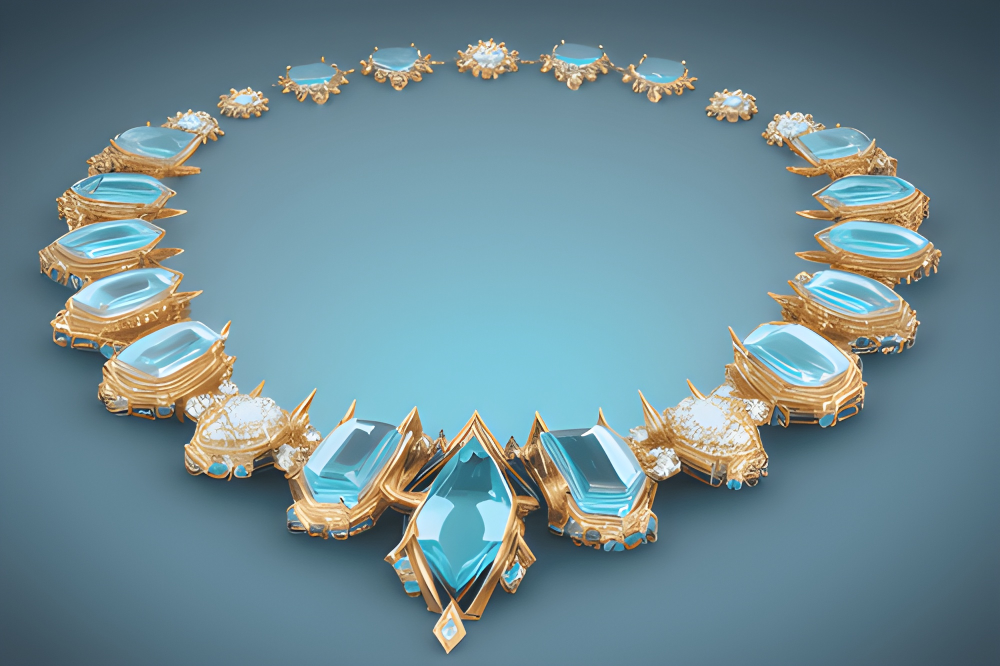

The Glittering World of Gems
Jewels have captured human fascination for centuries. From sparkling diamonds to vibrant emeralds, each gem tells a story of elegance and rare beauty. Their timeless allure is both a testament to the Earth's treasures and the ingenuity of craftsmanship.

Birthstones: A Personal Connection
Birthstones, often linked to each month, hold personal significance and symbolism. Whether it's the calming aquamarine of March or the fiery ruby of July, birthstones have been cherished as tokens of identity and protection.
The Art of Jewelry Design
Jewelry design is a fusion of imagination and precision. Meticulously set stones, intricate metalwork, and innovative designs transform raw materials into wearable works of art. From vintage elegance to modern minimalism, jewelry showcases the breadth of human creativity.
